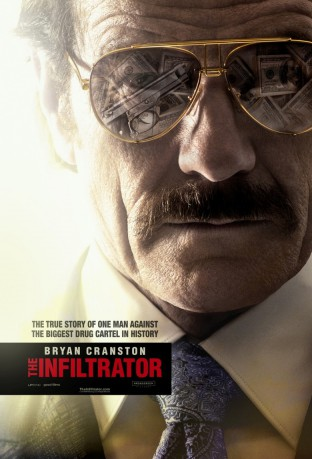

#5428 The Infiltrator
 gesehen am 17.04.2017
gesehen am 17.04.2017
 
 IMDB-Wertung: 7.1 / 10
IMDB-Wertung: 7.1 / 10  Metascore: 0
Metascore: 0 
In den 80er Jahren arbeitet der Agent der US-Drogenvollzugsbehörde Robert Mazur fünf Jahre lang als schmieriger Geschäftsmann Bob Musella undercover und wäscht Geld für das internationale Verbrechen. Mazur dringt dabei bis in die innersten Kreise des organisierten Verbrechens vor. Dabei unterstützen ihn Kathy Ertz, die sich als seine Verlobte ausgibt, sowie sein Agenten-Kollege Emir Ebreu Gemeinsam ermitteln sie gegen kriminelle Banker und Geschäftsleute, die ihren Einfluss auf der ganzen Welt ausüben und milliardenschwere Drogengeschäfte tätigen. Die in dieser Zeit gesammelten Erkenntnisse setzt Mazur später ein, um die weltweit größten Kartelle zu stürzen - darunter auch den berühmt-berüchtigten Drogenbaron Pablo Escobar, mit dessen rechter Hand Roberto Alcaino er sich zuvor anfreundet...
Jahr: 2016
Dauer: 127 Minuten
FSK:
Land: England Studio: Paramount PicturesTonspuren: DD5.1 - ,
Untertitel: Deutsch, Englisch,
Auflösung: 1080p (1920x808) Größe: 9041 MB
Genre: Thriller, Drama, Krimi, Biographie
Regisseur: Brad Furman
Drehbuch: Gregory C. Haynes
Soundtrack:
Darsteller:
 Bryan Cranston als Robert Mazur
Bryan Cranston als Robert Mazur Leanne Best als Bowling Alley Waitress
Leanne Best als Bowling Alley Waitress Daniel Mays als Frankie
Daniel Mays als Frankie- Tom Vaughan-Lawlor als Steve Cook
 Lara Decaro als Andrea Mazur
Lara Decaro als Andrea Mazur Juliet Aubrey als Evelyn Mazur
Juliet Aubrey als Evelyn Mazur Olympia Dukakis als Aunt Vicky
Olympia Dukakis als Aunt Vicky Amy Ryan als Bonni Tischler
Amy Ryan als Bonni Tischler John Leguizamo als Emir Abreu
John Leguizamo als Emir Abreu Joseph Gilgun als Dominic
Joseph Gilgun als Dominic Jason Isaacs als Mark Jackowski
Jason Isaacs als Mark Jackowski Richard Katz als Attorney
Richard Katz als Attorney- Juan Cely als The Informant
 Mark Holden als Eric Wellman
Mark Holden als Eric Wellman- Rubén Ochandiano als Gonzalo Mora Jr.
 Simón Andreu als Gonzalo Mora Sr.
Simón Andreu als Gonzalo Mora Sr. Christian Contreras als Lee Palmer
Christian Contreras als Lee Palmer- Jasmine Jardot als Dancer 2, Café de la Musica
 Yul Vazquez als Javier Ospina
Yul Vazquez als Javier Ospina Diane Kruger als Kathy Ertz
Diane Kruger als Kathy Ertz Art Malik als Akbar Bilgrami
Art Malik als Akbar Bilgrami Saïd Taghmaoui als Amjad Awan
Saïd Taghmaoui als Amjad Awan- Tim Dutton als Ian Howard
- Ekaterina Zalitko als Lola - Emir Lapdancer
- Ashley Bannerman als Laura Sherman
 Michael Paré als Barry Seal
Michael Paré als Barry Seal Carsten Hayes als Rudy Armbrecht
Carsten Hayes als Rudy Armbrecht Andy Beckwith als Joe
Andy Beckwith als Joe Benjamin Bratt als Roberto Alcaino
Benjamin Bratt als Roberto Alcaino Elena Anaya als Gloria Alcaino
Elena Anaya als Gloria Alcaino- Jordan Loughran als Bianca Alcaino
- Matthew Stirling als Mora's Henchman
- Cesare Taurasi als Gerardo Moncada
 Mitchell Mullen als William von Raab
Mitchell Mullen als William von Raab- Georgie Carter als Gonzalo Jr's Girlfriend , uncredited
 Max Cavenham als NBC Newscaster , uncredited
Max Cavenham als NBC Newscaster , uncredited Raul Colon als Dockworker , uncredited
Raul Colon als Dockworker , uncredited Alexander Cooper als Undercover Agent , uncredited
Alexander Cooper als Undercover Agent , uncredited- Danny Darren als CIA Agent , uncredited
 Nick Donald als US Customs Agent , uncredited
Nick Donald als US Customs Agent , uncredited- Amber Elizabeth als Wedding Guest , uncredited
 Eric Etebari als Guy Hamilton , uncredited
Eric Etebari als Guy Hamilton , uncredited- Gloria Garcia als US Customs Agent , uncredited
- Briston George als US Customs Agent , uncredited
- Johanna R. Griesé als Ann , uncredited
- Alexander Hathaway als Colombian Gangster , uncredited
- Jim Horning als DEA Agent , uncredited
- Bobby Hoskins als Dock Worker , uncredited
- Anthony J. James als Paul , uncredited
- Marcus G. Johnson als Secret Agent , uncredited
Datei: X:\2016(G-M)\Infiltrator, The (2016, FSK, 1920x808).mkv seit 30.01.2017
Festplatte: HD 2016(A-Z)
 Es gibt insgesamt 164 Filme in der Gruppe '2016(G-M)'
Es gibt insgesamt 164 Filme in der Gruppe '2016(G-M)'